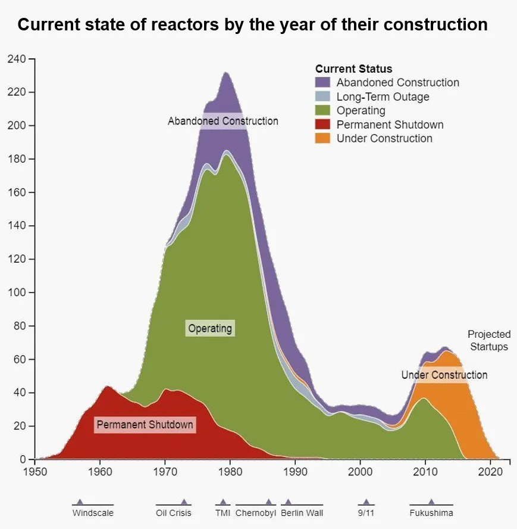
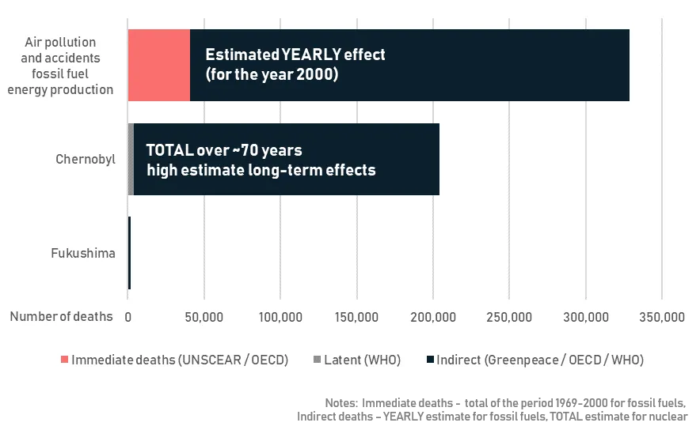
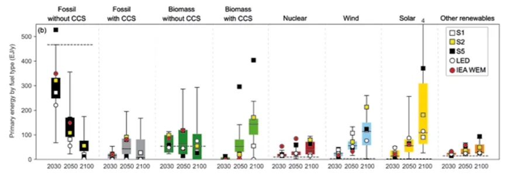
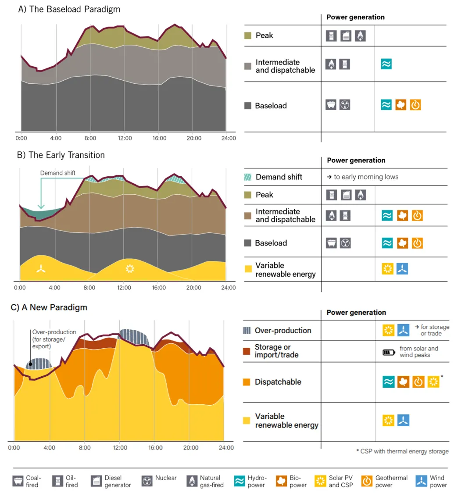
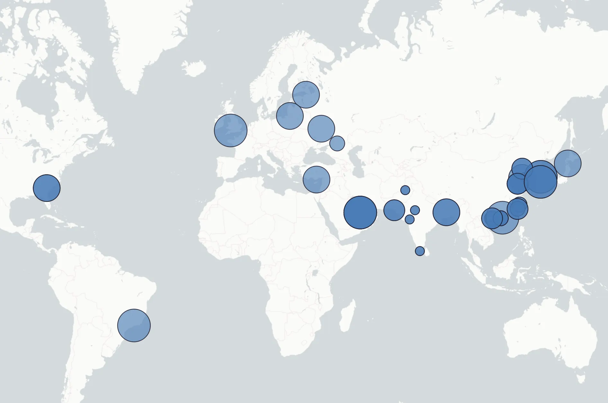
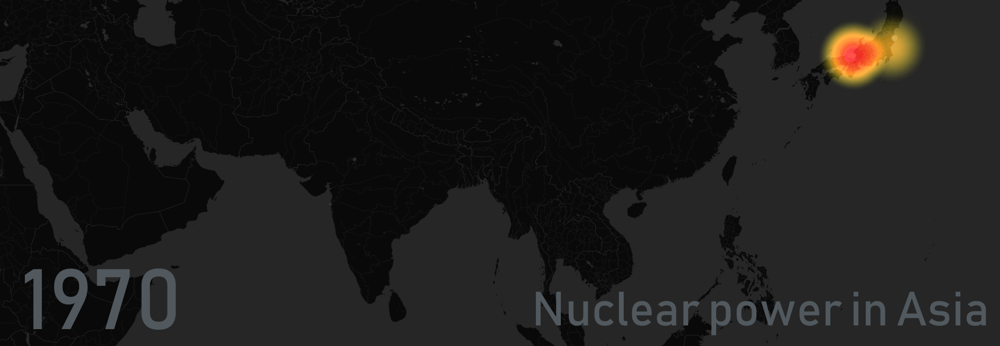

The future is not nuclear, but not without nuclear
Originally published in May 2019 on Medium
With climate change on our doorstep nuclear power could be a prime substitute for fossil fuels. Nuclear power plants produce no CO2 emissions — a potent greenhouse gas — which is the main driver of the climate crisis. They are based on a mature technology, with experience on operations and maintenance across the world and extensive safety standards. And they are mostly fuelled by uranium, from which we have at least 130 years of supply¹ (it is going to be likely more with new technologies and exploration).
On the top of that we used to love nuclear. Just look at the animation below: see how the ’70s and the ’80s nuclear power plants were popping up around the world?
blue circles are plants appearing in the year when their building have started (size indicates capacity), the heatmap shows how these plants are actually generating electricity — from transparent yellow meaning less production and more pronounced red meaning high, concentrated production, data: World Nuclear Association
Of course we all know what happened: Windscale in 1957, Three Mile Island in 1979 and Chernobyl in 1986 (and its clean-up is still going on). But this was already a time when protests against nuclear power were widespread. Public opinion was against nuclear energy and so projects were abandoned and investments in new nuclear energy capacity fell. Italy even held a referendum on nuclear power, after its success eventually phasing out existing nuclear capacity in 1990.

Source: Global Nuclear Database of the Bulletin of the Atomic Scientists, here
This can be clearly seen in the figure here (taken from the Bulletin of Atomic Scientists). It shows the current status of the reactors based on the date when their construction started. Most reactors were built in the years 1970–1985, and the reactors built in this period still are the majority of operable nuclear reactors.
Let’s consider this for a moment. Looking at the red area it is evident that reactors eventually are closed down for good. This used to be planned for 40 years of operation, now it is more likely to be 50 or more. Still, considering this we soon will be facing a moment when we will need to decide whether we should invest into new nuclear capacity or not.
While protests were often focusing on public safety issues of nuclear power, the risk is considerable, but its likelihood is relatively low. Since 1990 there are about 400 nuclear power plants in operation and known incidents — with the most important being the Fukushima disaster— were only a few. While other energy industries — such as the oil upstream — face fatal accidents many times annually.

Deaths related to fossil fuel energy production and nuclear incidents, sources: OECD, Greenpeace, UNSCEAR, WHO (Chernobyl), WHO (Fukushima)
Of course it can — and should be — argued that nuclear kills most of its victims through insidious ways. Radiation, contamination of water sources, diseases slowly creeping in. Deaths resulting from latent effects of nuclear accidents are manifold of direct deaths. But the same is true for climate change and air pollution caused by fossil based energy production. Indirect deaths caused through respiratory and cardiovascular illnesses, emphysema, asthma, malaria, dengue, undernutrition and natural disasters. The difference? For these there does not need to be an incident. It is simply the results of business as usual use of fossil fuels.
Nevertheless there is a problem with nuclear which is not dependent on human misconduct and have no cure yet: nuclear waste.
This place is not a place of honor… no highly esteemed deed is commemorated here… nothing valued is here. What is here was dangerous and repulsive to us. This message is a warning about danger. The danger is in a particular location… it increases towards a center… the center of danger is here… of a particular size and shape, and below us. The danger is still present, in your time, as it was in ours. — part of the long-time nuclear waste warning message proposed to warn future generations about nuclear waste disposal sites
I consider it to be the main counterpoint against investing in new nuclear capacity, simply because there is no good way of managing nuclear waste. That is true to a point that most of the spent nuclear fuel is currently sitting in the nuclear plants as a temporary solution.
There is recycling as France does with most of its spent nuclear fuel, which reduces the toxicity and the amount of the nuclear waste. But reprocessing itself still produces waste. And the long-term solution? Bury it deep in the ground. Geological disposal means burying highly radioactive waste — which can be active for a period of 1,000–10,000 years — deep into the ground in specially selected sites and closing it down. Finland is the first to actually get close to having a functioning geological disposal site. It is planned to open in 2023.
Thus, right now our best shot at nuclear waste management is basically putting it under rocks and forgetting about it. Promising, is it not? Nevertheless nuclear should play an important role in our future energy plans and that is because we have more pressing issues. If you do not think so here is a good reminder.
But the overall idea is to get rid of or at least mitigate climate change we will need to limit the emission of greenhouse gases (primarily CO2). And probably the most important part of this is limiting emissions from energy and electricity production.

Change in energy consumption by fuel type in the IPCC scenarios — energy scenarios that aim to limit climate change to 1.5 C increase by 2100, nuclear (5th from left) is increasing, but its increase is significantly less compared to renewables (e.g.: solar), source: IPCC AR5 report, page 131 (Ch 2), here
IPCC, the International Panel on Climate Change, an intergovernmental panel of climate scientists, who produces internationally recognised reports on the state of climate change and on mitigation pathways says that
Nuclear energy could make an increasing contribution to low-carbon energy supply, but a variety of barriers and risks exist - IPCC AR5 report, page 517
Their climate mitigation pathways consider a ~2.5x increase in nuclear based electricity generation (see image above). Which is actually a small increase compared to renewable technologies, but considering that the capacity of nuclear has been decreasing and was on its peak back in ’93 — that is a change.

source: REN21 Renewables 2017 report, page 162, here
But why do we need nuclear when renewables are an option?
The answer lies in the concept of base load capacity. We have a considerable problem with storing electricity, which means that in most of the cases electricity have to be produced in the same time as it is used. That is why in traditional electricity systems production volume needs to match consumption volume. Our consumption follows a well defined, but changing pattern and electricity producers try to match this pattern.
The figure above (taken from REN21’s outstanding report on renewables) shows how this works. Base load generators are large, conventional producers, running usually on full capacity and therefore producing the “base load” of consumption. Renewables provide a prime substitute for intermediate demand with their variable energy output (B stage), but as their electricity production is variable and as — yet³ — we do not have efficient solutions for storing their electricity to use them as a single source vast infrastructure improvements are needed (to get to C stage).
And that is why nuclear seems more feasible in the near future for many. Including countries like France, where most of energy production is coming from nuclear. A country which plans to expand its nuclear capacity — on the platform of fighting climate change, just as Poland, Hungary, Romania and most of Europe’s eastern block does.
However Europe is divided in the question. In the same time Germany is phasing out its nuclear capacity. A move made possible by interconnected grids across Europe, and thus higher electricity imports. But also by new investment into conventional sources (such as coal and gas) and thus an increased dependence on fossil fuels. With the wishful expectation that the future will give way to smarter consumption (demand side management — think smart homes). But until then this will mean increased emissions from German electricity production.

New constructions since 2010, data: World Nuclear Association
And outside Europe those who are facing increasing consumption and do not have the comfort of an energy union are increasingly looking into using nuclear power.
The figure on the left shows new nuclear plant constructions that have started since 2010. While there are some new generation constructions in countries traditionally using nuclear such as the US, the UK or Korea, most of new constructions is concentrated to developing countries. China has built 14 reactors and 11 are under construction in the country. India and Pakistan — although with smaller capacities — respectively building 6 and 4 reactors (2 of them are already operable). And the United Arab Emirates — with US and Korean help — has started building the first nuclear power plant in the Arab World, with Saudi Arabia following close behind.
Nuclear is a technology that has been tested and matured in Europe, the US, Japan and Russia, and while its appearance in the developing world still raises new kinds of questions, for now it seems like that new countries are appreciating and choosing it as a clean energy source. Which initiative is supported by owners of the technology: besides the US and Korea supporting plans of the UAE, while Rosatom (Russia’s state atomic energy corporation) plans to build plants in Bangladesh, Belarus, Egypt and Turkey — putting four new countries on the nuclear map.

blue circles are plants appearing in the year when their building have started (size indicates capacity), the heatmap shows how these plants are actually generating electricity — from transparent yellow meaning less production and more pronounced red meaning high, concentrated production, data: World Nuclear Association
While nuclear may be leaving parts of Europe (at a cost) globally it seems to be staying with us for the long-term as a tolerated — but no particularly popular — ally in the fight against climate change. The lesser of two evils.
Nevertheless it is paramount for us to really only use nuclear to a level which is inevitable. Nuclear power is a solution and a good solution in the struggle against global warming, but it always should be seen as temporary, frightening and dangerous. And in the meantime we have to try to find sustainable solutions for the waste it generates — because that is surely staying with us for the long-run.
The current level and more of nuclear power will be needed to fulfill the needs of an ever growing global energy consumption without making climate change even worse. Entirely abandoning nuclear, and filling up the space left behind with fossil fuels is rather a step back than a step forward in environmental terms.
As the French president, Emmanuel Macron said last year referring to the German phase-out: “I don’t idolize nuclear energy at all. But I think you have to pick your battle. My priority in France, Europe and internationally is CO2 emissions and (global) warming,”. Eventually we will have to fight the issues of nuclear too, but until then it is here and we should use it in the fight against the climate crisis.
1 —230–250 years from all conventional sources and new, more efficient technologies can increase this number 50-fold. According to the IAEA (p526) and the NEA.
2 — Class 4 or higher on the INES scale.
3 — Interconnections between regions, electricity storage (such as batteries and hydrogen production) and increased electricity trade in general can be a solution for this on the long run. See the mentioned REN21 report for more.